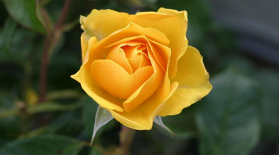

 Oviri is an 1894 ceramic sculpture by the French artist Paul Gauguin. It depicts a Tahitian goddess of mourning, with long pale hair, large breasts, and wild eyes. She smothers a wolf with her feet, while clutching a cub in her arms. Art historians have suggested multiple complex interpretations; its alternative title, "Savage", may refer to Gauguin's own view of himself. The work's form and tone was inspired by a number of ancient sources, including Majapahit mummies and an Assyrian relief of a master of animals. Other possible influences include preserved skulls from the Marquesas Islands, figures found at Borobudur, and a 9th-century Mahayana Buddhist temple in central Java. Gauguin made three casts, each in partially glazed stoneware. The original is housed at the Musée d'Orsay, in France. It was exhibited at the 1906 Salon d'Automne where it was seen by Pablo Picasso, who used it as the basis for one of the figures in his Les Demoiselles d'Avignon. (Full article...)
Oviri is an 1894 ceramic sculpture by the French artist Paul Gauguin. It depicts a Tahitian goddess of mourning, with long pale hair, large breasts, and wild eyes. She smothers a wolf with her feet, while clutching a cub in her arms. Art historians have suggested multiple complex interpretations; its alternative title, "Savage", may refer to Gauguin's own view of himself. The work's form and tone was inspired by a number of ancient sources, including Majapahit mummies and an Assyrian relief of a master of animals. Other possible influences include preserved skulls from the Marquesas Islands, figures found at Borobudur, and a 9th-century Mahayana Buddhist temple in central Java. Gauguin made three casts, each in partially glazed stoneware. The original is housed at the Musée d'Orsay, in France. It was exhibited at the 1906 Salon d'Automne where it was seen by Pablo Picasso, who used it as the basis for one of the figures in his Les Demoiselles d'Avignon. (Full article...)
This is google.
This Normal Paragraph.
abc@abc.com
Normal address
It is the worstbest
Email Jon
reviews
info
Oviri is an 1894 ceramic sculpture by the French artist Paul Gauguin. It depicts a Tahitian goddess of mourning, with long pale hair, large breasts, and wild eyes. She smothers a wolf with her feet, while clutching a cub in her arms. Art historians have suggested multiple complex interpretations; its alternative title, "Savage", may refer to Gauguin's own view of himself. The work's form and tone was inspired by a number of ancient sources, including Majapahit mummies and an Assyrian relief of a master of animals. Other possible influences include preserved skulls from the Marquesas Islands, figures found at Borobudur, and a 9th-century Mahayana Buddhist temple in central Java. Gauguin made three casts, each in partially glazed stoneware. The original is housed at the Musée d'Orsay, in France. It was exhibited at the 1906 Salon d'Automne where it was seen by Pablo Picasso, who used it as the basis for one of the figures in his Les Demoiselles d'Avignon. (Full article...)
/> />Oviri is an 1894 ceramic sculpture by the French artist Paul Gauguin. It depicts a Tahitian goddess of mourning, with long pale hair, large breasts, and wild eyes. She smothers a wolf with her feet, while clutching a cub in her arms. Art historians have suggested multiple complex interpretations; its alternative title, "Savage", may refer to Gauguin's own view of himself. The work's form and tone was inspired by a number of ancient sources, including Majapahit mummies and an Assyrian relief of a master of animals. Other possible influences include preserved skulls from the Marquesas Islands, figures found at Borobudur, and a 9th-century Mahayana Buddhist temple in central Java. Gauguin made three casts, each in partially glazed stoneware. The original is housed at the Musée d'Orsay, in France. It was exhibited at the 1906 Salon d'Automne where it was seen by Pablo Picasso, who used it as the basis for one of the figures in his Les Demoiselles d'Avignon. (Full article...)